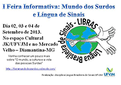

Modelo
Telefone Público para Surdos TPS 01
Telefone Público para Surdos TPS 01
Finalidade:
Visando garantir a acessibilidade das pessoas surdas ou com dificuldade de fala (paralisia cerebral e acidente vascular cerebral/AVC) aos meios de telefonia, de forma independente. Próprio para se comunicar por meio de mensagens escritas, o TPS 01 é ligado na linha telefônica através da conexão dos seus acopladores acústicos a outro telefone comum ao público, sendo uma nova tecnologia que facilita muito a comunicação dos surdos e deficientes auditivos, que há pouco tempo não tinham nenhum meio de comunicação por telefone.
Visando garantir a acessibilidade das pessoas surdas ou com dificuldade de fala (paralisia cerebral e acidente vascular cerebral/AVC) aos meios de telefonia, de forma independente. Próprio para se comunicar por meio de mensagens escritas, o TPS 01 é ligado na linha telefônica através da conexão dos seus acopladores acústicos a outro telefone comum ao público, sendo uma nova tecnologia que facilita muito a comunicação dos surdos e deficientes auditivos, que há pouco tempo não tinham nenhum meio de comunicação por telefone.

I FEIRA INFORMATIVA: MUNDO DOS SURDOS E LÍNGUA DOS SINAIS NO PORTO
Diamantina-MG sediará nos dias 02, 03 e 04 de setembro de 2013, no espaço cultura JK/UFVJM e no “Mercado Velho”, a I Feira Informativa: Mundo dos Surdos e Língua de Sinais.
Diamantina-MG sediará nos dias 02, 03 e 04 de setembro de 2013, no espaço cultura JK/UFVJM e no “Mercado Velho”, a I Feira Informativa: Mundo dos Surdos e Língua de Sinais.